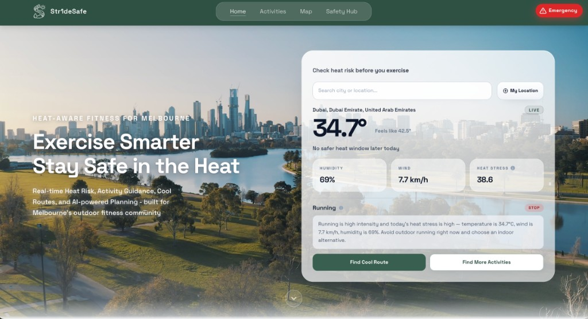
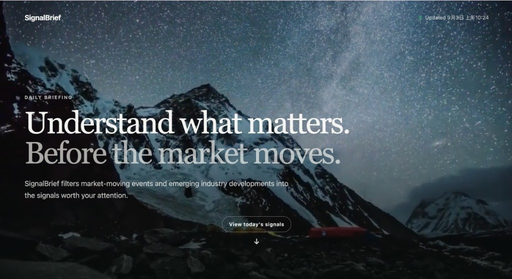
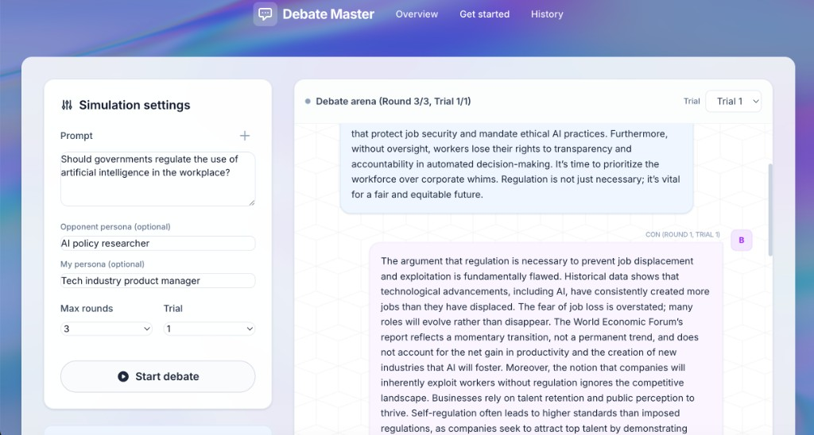

我能理解使用者問題
從需求、情境與流程出發， 定義真正需要解決的產品問題。
蔡佩融
Pei-Jung Tsai (EVELYN)
應徵職位
AI 產品經理
好奇心 × 韌性 × 成長型思維
具商業與資訊系統跨域背景，
能從需求出發理解技術可行性
具跨文化、跨領域團隊協作與專案推進經驗，
曾參與團隊協作與領導
持續探索 AI 技術，
並具 AI 應用與產品實作經驗
Selected Work
Turning ideas into products through
product thinking, technology and AI.

Project 01
智慧運動安全規劃平台，從使用者運動需求與安全情境出發， 提供更合適的運動時段與路線輔助建議。
從 User Pain Point 出發，整理使用者情境、功能需求與系統規格， 將需求轉化為團隊可執行的產品方向。
與商業分析、資料庫及開發角色協作， 結合需求理解與技術背景，協助團隊評估技術可行性並推進產品。
將天氣、時間與使用者情境結合至推薦邏輯， 協助使用者選擇更適合的運動時段。
Vue · FastAPI · PostgreSQL · LLM

Project 02
AI 財經與產業新聞情報產品， 從大量資訊中篩選真正重要的市場與產業訊號， 幫助使用者快速掌握每日關鍵資訊。
從「資訊過載」的使用者痛點出發， 設計產品流程、新聞篩選邏輯與功能， 並完成前後端整合與可運作產品 Demo。
以規則處理時間、來源、去重與分類， 再透過 LLM 判斷新聞重要性、生成中文摘要與 Impact Path。
使用 Docker、FastAPI、PostgreSQL 與 AWS， 完成 ECS、RDS、CloudFront 與 EventBridge 部署， 實作每日自動更新流程。
Vue · FastAPI · PostgreSQL · Docker · AWS · LLM

Project 03
AI 辯論模擬產品。 使用者輸入議題與角色設定後， 系統模擬正反雙方多輪辯論， 並由 AI Judge 產生優缺點與改善建議。
以 StateGraph 管理 Init → Pro → Con → Judge 的多輪辯論流程， 包含 Round、Trial、Conversation State 與流程控制。
透過 ChatOpenAI、System / Human Message 與 Structured Output 串接 GPT-4o-mini， 管理角色 Prompt、對話 Context 與 Judge 結構化輸出。
參與 Debate Lab、Simulation Form、Chat UI、 Result Summary、History 與 PDF Export 等產品互動設計與實作。
Vue · FastAPI · LangGraph · LangChain · GPT-4o-mini · PostgreSQL
Why Me
Connecting user needs, technology and execution.
從需求、情境與流程出發， 定義真正需要解決的產品問題。
具資訊系統背景， 能理解 API、資料庫、AI Workflow、 雲端部署與技術可行性。
具 AI Prototype、產品流程、 前後端整合到雲端部署的實作經驗。
從 Scope、WBS、時程與資源規劃， 到 Pilot、KPI 與成效評估， 具備從規劃到驗證的專案管理思維。